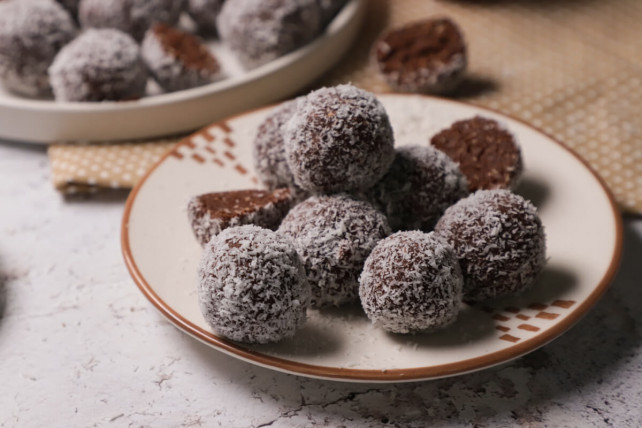

Coconut balls

Description
An easy-to-make Hungarian dessert, it doesn't even need cooking or baking.
Similar to the Swedish chokladboll, but while it has oats, the Hungarian version is made from all purpose (wheat) crackers.
Ingredients
- White crackers (or plain biscuits, whichever name you prefer)
- Butter
- Sugar
- Milk
- Cocoa powder
- Rum (not much!)
- Shredded coconut
Steps
- Pummel the crackers into fine powder (although we can usually just buy the powder version, but what's the fun in that?)
- Mix everything, except the coconut
- Form little balls, usually 3-4 cm in diameter
- Roll the balls in the coconut
- Put it in the fridge for a couple hours! This step is hard, but it's worth it, I promise.
Back to the main page